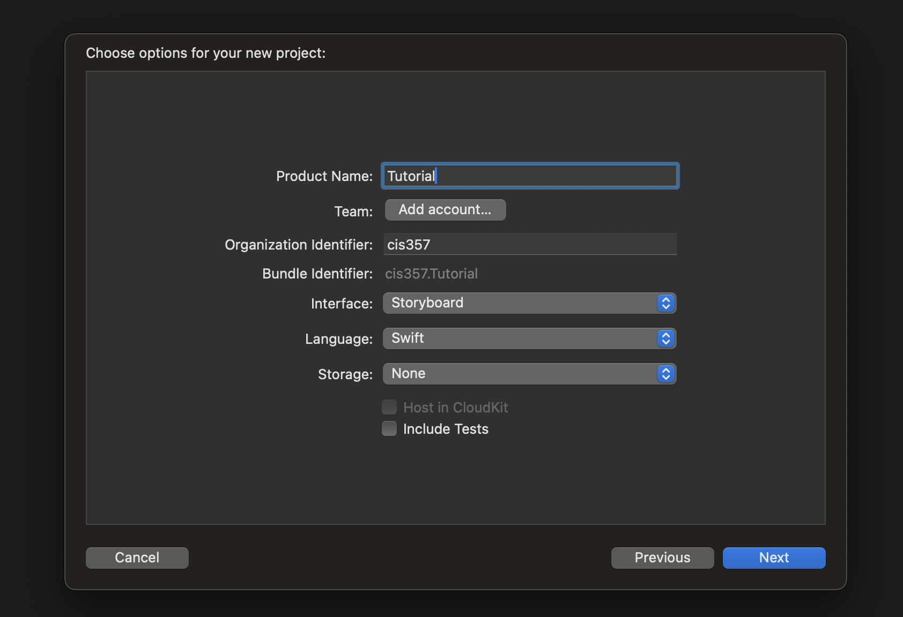
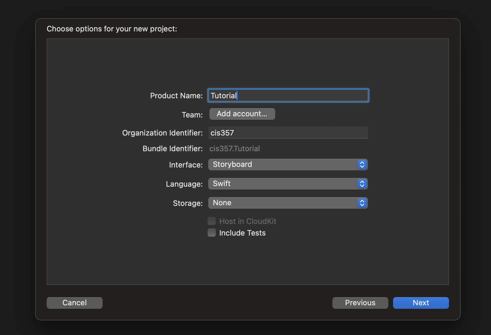

Getting Started with MetalKit
Overview
This tutorial will explore Metal, Apple's API for graphics and parallel computing on the GPU. We will be using Metal only for graphics in this tutorial, and by the end, we will have created an app that can render simple .obj files on IOS.
Getting Started
To follow along, you'll need Xcode installed for developing applications on iOS. We will be using MetalKit, although that should already come installed with Xcode.
Note: Concepts such as stages of the render pipeline, indexed-rendering, and matrix math as it relates to graphics will all be used in this tutorial. Some of these concepts may be reviewed briefly, although explaining each of these concepts in-depth is outside the scope of this tutorial. Luckily, computer graphics is a well-established field and there is no shortage of resources that explore each topic on its own in-depth. See "See Also" section for more information.
Rendering to a View
We'll start with a new project. In the 'iOS' tab, select 'App' and click 'Next.' We'll be using Storyboard instead of SwiftUI, and we'll be coding in Swift. Once you've named your project and set the correct options, click 'Next.'
 

The first step to using Metal is giving Metal a place to draw. Metal can use any UIView, but MetalKit provides a special "MTKView" that allows us to skip a lot of boilerplate code. In the main Storyboard, open the Library and search "MetalKit View." Drag one onto your main view controller. Feel free to position and size it however you'd like. We'll make our's fill the whole screen by using constraints to fill parent size and position in the center, but the view will work regardless of where it's at. Finally, in our ViewController, we'll need to add an outlet referencing our MTKView. We'll name our's "metalView."
Now that we have something to draw on, we can start using Metal in our code. In our ViewController, there's a few things we have to do. (Before starting, be sure to import MetalKit!) First, we need to make a device that represents the GPU on our device. Then, we'll set the clearColor of our MTKView, which is the color Metal resets our color buffer with every frame. We'll also set our MTKView's delegate to the ViewController-- more on that in a second. Finally, we need to make a command queue from our device.
ViewController.swift
import MetalKit
class ViewController: UIViewController {
@IBOutlet weak var metalView: MTKView!
var commandQueue: MTLCommandQueue!
override func viewDidLoad() {
super.viewDidLoad()
metalView.device = MTLCreateSystemDefaultDevice()
metalView.clearColor = MTLClearColor(red: 0.0, green: 0.0, blue: 1.0, alpha: 1.0)
metalView.delegate = self
commandQueue = metalView.device?.makeCommandQueue();
}
}Currently, this code won't compile because we haven't made our ViewController implement a protocol called "MTKViewDelegate." This protocol has two functions: one is for when the view is being resized-- we won't use that one for now. The other is the draw function, which is called every frame. At the moment, we just want to clear the screen, so our draw function will be pretty simple.
ViewController.swift
// ...
extension ViewController: MTKViewDelegate {
func mtkView(_ view: MTKView, drawableSizeWillChange size: CGSize) { }
func draw(in view: MTKView) {
let buffer = commandQueue.makeCommandBuffer()!
let encoder = buffer.makeRenderCommandEncoder(
descriptor: metalView.currentRenderPassDescriptor!
)!
encoder.endEncoding()
buffer.present(view.currentDrawable!)
buffer.commit()
}
}Now, when we hit "Run," we should see our clear color in our MTKView.
Before we move on, it's helpful to review what we've done so far. Let's break down some Metal terminology:
Device: a device represents the GPU on whatever device our code is running on.
Command Queue: A queue that our device executes commands from.
Command Buffer: A temporary storage location for a batch of encoded commands.
Command Encoder: A mechanism to encode commands for our device to execute into a command buffer.
With this in mind, we can start to understand what's going on so far. On initialization, we get a reference to our device. With our device, we make a command queue. Notice how we only have to make a single command queue; every time we draw, we can reuse it. In our draw function, we make a new command buffer every frame. Using the buffer, we make a command encoder to encode our commands we wish to execute that frame.
Our encoder is also created from a descriptor argument that uses our metalView's currentRenderPassDescriptor. This is how our encoder knows to clear the color buffer with the color we gave to our metalView; when we set metalView.clearColor, our metalView's currentRenderPassDescriptor gets updated to include our clearColor every frame. We aren't rendering any geometry at the moment, so as soon as our encoder is created, we call endEncoding immediately. Keep in mind, this isn't what actually does the drawing; all we've done is compiled a list of instructions for our GPU device to execute; they haven't actually been executed yet.
Now that our buffer has our frame commands encoded, we tell it that the resulting image should be presented on our view's currentDrawable instead of some off-screen render target. Finally, we commit our command buffer, which enqueues our instructions to be executed by our device in our commandQueue.
Rendering a Triangle
This is where things start to get interesting. In this step, we'll begin transferring data that we interact with to the GPU. Start by creating a new Metal file (File > New File > Metal File) and call it "Shader." In this file, we'll add the following code.
Shader.metal
#include
using namespace metal;
vertex float4 vertex_shader(const device float3 *vertices [[ buffer(0) ]], uint vertexId [[ vertex_id ]]) {
return float4(vertices[vertexId], 1.0);
}
fragment half4 fragment_shader() {
return half4(1.0, 0.0, 0.0, 1.0);
}
Woah! That's not Swift! What's going on? Well, this is code that's going to be run on the GPU. Unfortunately, there isn't a compiler that can translate Swift to a language the GPU can understand. Instead Metal introduces Metal Shading Langauge (MSL), which is a language based of C++ 14 syntax. This tutorial won't cover much of the MSL syntax, however it isn't much different from normal C++. There are a few decorators used to annotate to the MSL compiler where data is coming from. For instance, in our vertex_shader function, we have the decorators [[ buffer(0) ]] and [[ vertex_id ]]. These tell Metal to put the data from buffer index 0 into our vertices parameter, and put the id of the current vertex into our vertexId parameter.
Our functions also have vertex and fragment keywords before them; these just specify what kind of function these functions are. The basic render pipeline consists of three steps:
Vertex Shader: A function that runs for each vertex in a vertex buffer. Typically, in this stage, you project world positions to normalized device coordinates (NDC) and set up data you want to be interpolated between vertices for the fragment shader, like color, UV coordinates, etc.
Rasterization: This stage is hidden and handled by Metal behind the scenes, but is still important to understand. Depending on the render mode, it takes a set of vertices and figures out which fragments (pixels) are within that geometric primitive. In our case, we're using triangles, so this stage deduces which fragments compose the triangle formed by three vertices for every set of three vertices in our vertex buffer.
Fragment Shader: This is the function that runs for every 'fragment' computed in the rasterization stage. Typcially, in this stage we compute the lighting at the fragment, and output the final color of each fragment
With this in mind, we can begin to understand what we've written in our shader file. Our vertex function takes in an array of vertices and a vertex id, and outputs a float4 with the position being the position of the vertex in the buffer at position vertexId. Our fragment function simply outputs the color red.
Now that our shader code is set up, we need to make our code on the CPU tell the GPU to use our shader code. In addition to our commandQueue, let's add some data to our viewController.
ViewController.swift
class ViewController: UIViewController {
// ...
var pipelineState: MTLRenderPipelineState?
var vertexBuffer: MTLBuffer?
let vertices = [
SIMD3<Float>(0.0, 1.0, 0.0),
SIMD3<Float>(-1.0, -1.0, 0.0),
SIMD3<Float>(1.0, -1.0, 0.0),
]
// ...
Next, we need to initialize these new values. In viewDidLoad, let's add some code.
ViewController.swift
override func viewDidLoad() {
// ...
let library = device.makeDefaultLibrary()
let pipelineDescriptor = MTLRenderPipelineDescriptor()
pipelineDescriptor.vertexFunction = library?.makeFunction(name: "vertex_shader")
pipelineDescriptor.fragmentFunction = library?.makeFunction(name: "fragment_shader")
pipelineDescriptor.colorAttachments[0].pixelFormat = .bgra8Unorm
pipelineDescriptor.depthAttachmentPixelFormat = .depth32Float
pipelineState = try! device.makeRenderPipelineState(descriptor: pipelineDescriptor)
vertexBuffer = device.makeBuffer(
bytes: vertices,
length: vertices.count * MemoryLayout<SIMD3<Float>>.stride,
options: []
)
}
In this code, we first create a library. Then, we make a MTLRenderPipelineDescriptor and add our two shader functions from our library. The library just looks in our MSL code for the functions with the names we've provided, compiles them, and attaches them to the pipelineDescriptor. Next, we specify the format of our color and depth buffer. Once we've filled out our descriptor, we make an MTLRenderPipelineState from it. This pipeline state object just tells Metal which pipeline to use when we encode commands-- we'll see this later in our draw function. Finally we make a MTLBuffer that has our vertex data.
With that setup out of the way, we can finally update our draw function
ViewController.swift
func draw(in view: MTKView) {
// ...
let encoder = buffer.makeRenderCommandEncoder(
descriptor: metalView.currentRenderPassDescriptor!
)!
encoder.setRenderPipelineState(pipelineState!)
encoder.setVertexBuffer(vertexBuffer, offset: 0, index: 0)
encoder.drawPrimitives(
type: .triangle,
vertexStart: 0,
vertexCount: vertices.count
)
encoder.endEncoding()
// ...
}
First, we make the GPU use our pipeline state with our custom vertex and fragment shader functions. Then, we bind our vertexBuffer to the vertex buffer index 0. Lastly, we call drawPrimitives and tell the GPU to draw triangles, starting at the first vertex, and go up to the number of vertices we have.
When we run, if all is well, we should now see a red triangle rendered across our MTKView.
Rendering in 3D
Before we start loading .obj files, we need to make our renderer work in 3D. To do this, there are a number of changes we need to make.
First, we need to pass some more data to the GPU. Specifically, we need to add normal data to each of our vertices. We won't be using normal data yet, but we'll need it later for more interesting shaders. Furthermore, we'll want to add some uniform data that our vertex shader can use, such as the model or projection transform matrices.
Secondly, we'll need to refactor our shader code to be able to accept our newly added data. Then, we'll need to use the data to render a 3D scene.
Because there's a lot that can go wrong, we'll break these changes into two bite-sized chunks that we can test before moving on. We'll start by updating our shaders. In our vertex shader, instead of reading directly from our Metal buffers, we're going to have two intermediate structures for representing vertex data at different points along the render pipeline. Our first structure will be accepted by our vertex shader called VertexIn. Instead of the [[ buffer(0) ]] decorator, we're going to use the [[ stage_in ]] decorator, which gets filled by the data in the vertex buffer for the vertex shader. Here's what our new shader code looks like:
Shader.metal
#include >metal_stdlib<
using namespace metal;
struct VertexIn {
float3 position [[ attribute(0) ]];
float3 normal [[ attribute(1) ]];
};
struct VertexOut {
float4 position [[ position ]];
float3 normal;
};
vertex VertexOut vertex_shader(const VertexIn vertexIn [[ stage_in ]]) {
VertexOut vertexOut = { 0 };
vertexOut.position = float4(vertexIn.position, 1.0);
vertexOut.normal = vertexIn.normal;
return vertexOut;
}
fragment half4 fragment_shader(const VertexOut vertexFragment [[ stage_in ]]) {
return half4(1.0, 0.0, 0.0, 1.0);
}Next, let's update our Swift code to use our new shaders.
ViewController.swift
typealias v3f = SIMD3>Float<
struct Vertex {
var position: v3f
var normal: v3f
}
class ViewController: UIViewController {
// ...
let vertices = [
Vertex(position: v3f(0.0, 1.0, 0.0), normal: v3f(0, 0, 1.0)),
Vertex(position: v3f(-1.0, -1.0, 0.0), normal: v3f(0, 0, 1.0)),
Vertex(position: v3f(1.0, -1.0, 0.0), normal: v3f(0, 0, 1.0)),
]
let indices: [UInt16] = [0, 1, 2]
override func viewDidLoad() {
// ...
commandQueue = metalView.device?.makeCommandQueue();
let vertexDescriptor = MTLVertexDescriptor()
vertexDescriptor.attributes[0].format = .float3
vertexDescriptor.attributes[0].offset = 0
vertexDescriptor.attributes[0].bufferIndex = 0
vertexDescriptor.attributes[1].format = .float3
vertexDescriptor.attributes[1].offset = MemoryLayout>v3f<.stride
vertexDescriptor.attributes[1].bufferIndex = 0
vertexDescriptor.layouts[0].stride = MemoryLayout>Vertex<.stride
// ...
pipelineDescriptor.vertexDescriptor = vertexDescriptor
pipelineState = try! device.makeRenderPipelineState(descriptor: pipelineDescriptor)
vertexBuffer = device.makeBuffer(
bytes: vertices,
length: vertices.count * MemoryLayout>Vertex<.stride,
options: []
)
indexBuffer = device.makeBuffer(
bytes: indices,
length: indices.count * MemoryLayout>UInt16<.size,
options: []
)
}
}
extension ViewController: MTKViewDelegate {
// ...
func draw(in view: MTKView) {
// ...
encoder.setVertexBuffer(vertexBuffer, offset: 0, index: 0)
// replace drawPrimitives with drawIndexedPrimitves
encoder.drawIndexedPrimitives(
type: .triangle,
indexCount: indices.count,
indexType: .uint16,
indexBuffer: indexBuffer!,
indexBufferOffset: 0
)
encoder.endEncoding()
// ...
}
}
Essentially, this code makes two changes. First, instead of sending just positions to the shader, we send our own custom struct that contains both position and normal data. Notice how now we have to specify to our pipeline descriptor a vertex descriptor. Our vertex descriptor describes where our data is coming from and what kind of data each attribute is pointing at. In our shader, each of the fields in our VertexIn struct has an [[ attribute( ) ]] decorator that specifies which vertex buffer to pull data from.
The other change this code makes is instead of rendering straight from the vertex buffer, we use indexed-rendering. In the case of our triangle, it doesn't make a lot of sense, but when we start using more complex models, indexed rendering will save us a lot of memory on the GPU. In short, models generally have vertices that are shared and a lot of data is redundant. We can mitigate this redundancy by using an index buffer to refer to vertices in our vertex buffer instead of just repeating the same vertex information every time we want to use it to render.
At this point, if we run, we should see the same triangle as before. We aren't in 3D yet, but we're getting there.
This next step will be much easier. All we have to do is get our uniforms set up to communicate our model and projection matrix to our vertex shader. Again, starting with our shader code, we need to make a few changes:
Shader.metal
// ...
struct Uniforms {
float4x4 modelMatrix;
float4x4 projectionMatrix;
};
// ...
vertex VertexOut vertex_shader(const VertexIn vertexIn [[ stage_in ]], constant Uniforms &uniforms [[ buffer(1) ]]) {
VertexOut vertexOut = { 0 };
vertexOut.position = uniforms.projectionMatrix * uniforms.modelMatrix * float4(vertexIn.position, 1.0);
vertexOut.normal = vertexIn.normal;
return vertexOut;
}
// ...
Here, we've added another struct for our uniform data that contains our model and perspective projection matrices. Unlike our VertexIn struct, we don't need to specify attribute locations. Instead, the bytes we send from our Swift code will map one to one to our bytes in the struct, so as long as the structs have identical signatures, the data should transfer seamlessly without the need for descriptors.
Next, as per usual, we're going to update our Swift code to interface correctly with our shader code:
ViewController.swift
// ...
import Spatial
typealias v3f = SIMD3>Float<
struct Uniforms {
var modelMatrix: float4x4 = float4x4(1.0)
var projMatrix: float4x4 = float4x4(1.0)
}
// ...
extension ViewController: MTKViewDelegate {
func mtkView(_ view: MTKView, drawableSizeWillChange size: CGSize) { }
func draw(in view: MTKView) {
// ...
var uniforms = Uniforms(
modelMatrix: float4x4(
AffineTransform3D(translation: Vector3D(x: 0.0, y: 0.0, z: -10.0))
),
projMatrix: float4x4(ProjectiveTransform3D(
fovyRadians: 45.0 * (Double.pi / 180.0),
aspectRatio: view.drawableSize.width / view.drawableSize.height,
nearZ: 0.1,
farZ: 100.0)
)
)
encoder.setRenderPipelineState(pipelineState!)
encoder.setVertexBuffer(vertexBuffer, offset: 0, index: 0)
encoder.setVertexBytes(&uniforms, length: MemoryLayout>Uniforms<.size, index: 1)
// ...
}
}
All we've done this time is copy our Uniforms struct on the CPU side, and sent it with our matrices filled out to the GPU. This tutorial won't cover much matrix math, but for all our matrix math we'll be using Apple's Spatial library. At this point, we're only utilizing the constructors for translation and perspective projection matrices.
In our uniforms, we've put our model at the coordinates (0, 0, -10). In normalized device coordinates, +X is right, +Y is up, and +Z is out of the screen towards you. So, our triangle should be 10 units into the screen. Our projection matrix has near-Z at .1 and far-Z at 100, and it has a vertical field of view of 45°. If we've done everything correctly, our triangle should appear further away then we've seen and it should no longer stretch perfectly across the screen.
Now that we're in 3D, there's one more thing we need to do in preparation for rendering more complex models: enabling depth-testing. Right now, if we rendered a model with faces that could occlude one another, there's no guarantee the closer faces would be rendered on top of the more distant ones. To fix this, we have to make the following changes to our Swift code:
ViewController.swift
// ...
class ViewController: UIViewController {
// ...
var depthStencilState: MTLDepthStencilState?
// ...
override func viewDidLoad() {
// ...
let depthStencilDescriptor = MTLDepthStencilDescriptor()
depthStencilDescriptor.depthCompareFunction = .less
depthStencilDescriptor.isDepthWriteEnabled = true
depthStencilState = device.makeDepthStencilState(descriptor: depthStencilDescriptor)
// ...
}
}
extension ViewController: MTKViewDelegate {
func mtkView(_ view: MTKView, drawableSizeWillChange size: CGSize) { }
func draw(in view: MTKView) {
// ...
encoder.setDepthStencilState(depthStencilState!)
encoder.setRenderPipelineState(pipelineState!)
// ...
}
}
The depthStencilState just tells the GPU to discard fragments if their z coordinate is less than existing fragments at the fragment position.
With all this setup complete, we can finally start rendering more complex geometry!
Rendering .obj Files
Right now, we can only render geometry that we hard-code manually. This is obviously not ideal. Luckily, there is a simple file format for storing geometry that we can parse very easily called ".obj" files. This tutorial will not cover how .obj files work, although code to read .obj files will be provided. Before we start reading .obj files, we're going to add per-vertex color data. By now, most of this process should be pretty familiar. If you're up to it, try adding color data yourself!
First, let's add the color data to our shader. While we're here, we're also going to start using a more complex shading model. Our shading model will just include ambient and diffuse components; this tutorial won't cover lighting; just know that our new fragment shader will make faces darker or lighter depending on whether or not their normal faces the direction light is coming from.
Shader.metal
// ...
struct VertexIn {
// ...
float3 color [[ attribute(2) ]];
};
struct VertexOut {
// ...
float3 color;
};
vertex VertexOut vertex_shader(const VertexIn vertexIn [[ stage_in ]], constant Uniforms &uniforms [[ buffer(1) ]]) {
// ...
vertexOut.color = vertexIn.color;
// ...
}
constant float3 LIGHT_DIR = float3(1.0, -3, -1.8);
constant float ambient = .3;
fragment half4 fragment_shader(const VertexOut vertexFragment [[ stage_in ]]) {
float diffuse = max(ambient, dot(normalize(vertexFragment.normal), -normalize(LIGHT_DIR)));
half3 color = (half3)vertexFragment.color * diffuse;
return half4(color.xyz, 1);
}
Next, we need to update our vertex descriptor and add color to each of the vertices in our triangle.
ViewController.swift
// ...
class ViewController: UIViewController {
// ...
let vertices = [
Vertex(position: v3f(0.0, 1.0, 0.0), normal: v3f(0, 0, 1.0), color: v3f(1.0, 0.0, 0.0)),
Vertex(position: v3f(-1.0, -1.0, 0.0), normal: v3f(0, 0, 1.0), color: v3f(0.0, 1.0, 0.0)),
Vertex(position: v3f(1.0, -1.0, 0.0), normal: v3f(0, 0, 1.0), color: v3f(0.0, 0.0, 1.0)),
]
// ...
override func viewDidLoad() {
// ...
vertexDescriptor.attributes[2].format = .float3
vertexDescriptor.attributes[2].offset = vertexDescriptor.attributes[1].offset + MemoryLayout.stride
vertexDescriptor.attributes[2].bufferIndex = 0
// ...
}
// ...
}
// ...
Now, if we build and run, we should be met with a colored triangle.

With that done, we're ready to begin loading and rendering .obj files. Because we've already covered all the tools you'll need to do this yourself, we won't be explaining much of this code in depth. We'll start by making a new 'Model.swift' file where we can write all our code to do with loading .obj files and rendering their geometry.
Model.swift
import MetalKit
import Spatial
struct ObjMaterial {
var color: v3f = v3f(0.0, 0.0, 0.0)
}
func parseMaterials(mtlFile: URL) -> [String: ObjMaterial] {
let data = try! String(contentsOf: mtlFile, encoding: .utf8)
let lines = data.components(separatedBy: .newlines)
var materials: [String: ObjMaterial] = [:]
// ensure a default material exists
materials[""] = ObjMaterial(color: v3f(1.0, 1.0, 1.0))
var currentMaterialName: String?
for line in lines {
let materialComponents = line.components(separatedBy: " ").filter { !$0.isEmpty }
if materialComponents.isEmpty {
continue
}
switch materialComponents.first?.trimmingCharacters(in: .whitespaces) {
case "newmtl":
if materialComponents.count >= 2 {
currentMaterialName = materialComponents[1]
materials[currentMaterialName!] = ObjMaterial()
}
case "Kd":
guard let name = currentMaterialName else { break }
materials[name]!.color = v3f(
Float(materialComponents[1])!,
Float(materialComponents[2])!,
Float(materialComponents[3])!
)
default:
break
}
}
return materials
}
struct ModelGeometry {
var vertices: [Vertex] = []
var indices: [UInt16] = []
var maxBound: v3f
var minBound: v3f
}
func parseVertices(objFile: URL, materials: [String: ObjMaterial]) -> ModelGeometry {
let data = try! String(contentsOf: objFile, encoding: .utf8)
let lines = data.components(separatedBy: .newlines)
var vertices: [Vertex] = []
var indices: [UInt16] = []
var positions: [v3f] = []
var normals: [v3f] = []
var indexMap: [String: [SIMD2<Int>: UInt16]] = [:]
var maxBound = v3f()
var minBound = v3f()
var currentMaterial: String = ""
indexMap[currentMaterial] = [:]
func parseLinev3f(components: [String]) -> v3f {
return v3f(
Float(components[1])!,
Float(components[2])!,
Float(components[3])!
)
}
func parseFaceIndices(components: [String]) -> [UInt16] {
var faceIndices: [UInt16] = []
for i in 1..<components.count {
let indexComponents = components[i].components(separatedBy: "/")
let indexPair = SIMD2<Int>(
Int(indexComponents[0])! - 1,
Int(indexComponents.last!)! - 1
)
var index = indexMap[currentMaterial]![indexPair]
if index == nil {
index = UInt16(vertices.count)
vertices.append(Vertex(
position: positions[indexPair.x],
normal: normals[indexPair.y],
color: materials[currentMaterial]!.color
))
indexMap[currentMaterial]![indexPair] = index
}
faceIndices.append(index!)
}
return faceIndices
}
for line in lines {
let components = line.components(separatedBy: " ").filter { !$0.isEmpty }
if components.isEmpty {
continue
}
switch components[0] {
case "v":
let pos = parseLinev3f(components: components)
maxBound = v3f(max(maxBound.x, pos.x), max(maxBound.y, pos.y), max(maxBound.z, pos.z))
minBound = v3f(min(minBound.x, pos.x), min(minBound.y, pos.y), min(minBound.z, pos.z))
positions.append(pos)
case "vn":
normals.append(parseLinev3f(components: components))
case "f":
let faceIndices: [UInt16] = parseFaceIndices(components: components)
if faceIndices.count == 3 { // triangle: append as-is
indices.append(contentsOf: faceIndices)
} else if faceIndices.count == 4 { // quad: break into triangles before appending
indices.append(contentsOf: [
faceIndices[0], faceIndices[1], faceIndices[2],
faceIndices[0], faceIndices[2], faceIndices[3]
])
}
case "usemtl":
currentMaterial = components.last!
indexMap[currentMaterial] = [:]
default:
break
}
}
return ModelGeometry(vertices: vertices, indices: indices, maxBound: maxBound, minBound: minBound)
}
class Model : NSObject {
var vertexBuffer: MTLBuffer?
var indexBuffer: MTLBuffer?
var transform: float4x4 = float4x4(1.0)
var indexCount: Int = 0
init(device: MTLDevice, objFile: URL, mtlFile: URL) {
super.init()
let geometry = parseVertices(
objFile: objFile,
materials: parseMaterials(mtlFile: mtlFile)
)
indexCount = geometry.indices.count
let scale = 20.0 / length(geometry.maxBound - geometry.minBound)
let center = ((geometry.maxBound + geometry.minBound) / 2.0) * scale
transform *= simd_float4x4(AffineTransform3D.init(translation: Vector3D(x: -center.x, y: -center.y, z: -25.0 - center.z)))
transform *= simd_float4x4(AffineTransform3D.init(scale: Size3D(width: scale, height: scale, depth: scale)))
vertexBuffer = device.makeBuffer(
bytes: geometry.vertices,
length: geometry.vertices.count * MemoryLayout<Vertex>.stride,
options: []
)
indexBuffer = device.makeBuffer(
bytes: geometry.indices,
length: geometry.indices.count * MemoryLayout<UInt16>.size,
options: []
)
}
func render(encoder: MTLRenderCommandEncoder, viewMatrix: float4x4, projectionMatrix: float4x4) {
guard
let vertexBuffer = vertexBuffer,
let indexBuffer = indexBuffer
else { return }
transform *= simd_float4x4(AffineTransform3D.init(rotation: Rotation3D(eulerAngles: EulerAngles(angles: simd_float3(0, 0.01, 0), order: .xyz))))
var uniforms = Uniforms(modelMatrix: viewMatrix * transform, projMatrix: projectionMatrix)
encoder.setVertexBuffer(vertexBuffer, offset: 0, index: 0)
encoder.setVertexBytes(&uniforms, length: MemoryLayout<Uniforms>.size, index: 1)
encoder.drawIndexedPrimitives(
type: .triangle,
indexCount: indexCount,
indexType: .uint16,
indexBuffer: indexBuffer,
indexBufferOffset: 0
)
}
}Next, let's refactor our "ViewController.swift" file. We don't need our hard-coded triangle anymore, so we can get rid of that, but we also need to replace it with our new Model class.
ViewController.swift
import UIKit
import MetalKit
import Spatial
typealias v3f = SIMD3<Float>
struct Uniforms {
var modelMatrix: float4x4 = float4x4(1.0)
var projMatrix: float4x4 = float4x4(1.0)
}
struct Vertex {
var position: v3f
var normal: v3f
var color: v3f
}
class ViewController: UIViewController {
@IBOutlet weak var metalView: MTKView!
var commandQueue: MTLCommandQueue!
var pipelineState: MTLRenderPipelineState?
var depthStencilState: MTLDepthStencilState?
var model: Model?
override func viewDidLoad() {
super.viewDidLoad()
let device = MTLCreateSystemDefaultDevice()!
metalView.device = device
metalView.clearColor = MTLClearColor(red: 0.0, green: 0.0, blue: 1.0, alpha: 1.0)
metalView.delegate = self
commandQueue = metalView.device?.makeCommandQueue();
let vertexDescriptor = MTLVertexDescriptor()
vertexDescriptor.attributes[0].format = .float3
vertexDescriptor.attributes[0].offset = 0
vertexDescriptor.attributes[0].bufferIndex = 0
vertexDescriptor.attributes[1].format = .float3
vertexDescriptor.attributes[1].offset = MemoryLayout<v3f>.stride
vertexDescriptor.attributes[1].bufferIndex = 0
vertexDescriptor.attributes[2].format = .float3
vertexDescriptor.attributes[2].offset = vertexDescriptor.attributes[1].offset + MemoryLayout<v3f>.stride
vertexDescriptor.attributes[2].bufferIndex = 0
vertexDescriptor.layouts[0].stride = MemoryLayout<Vertex>.stride
let library = device.makeDefaultLibrary()
let pipelineDescriptor = MTLRenderPipelineDescriptor()
pipelineDescriptor.vertexFunction = library?.makeFunction(name: "vertex_shader")
pipelineDescriptor.fragmentFunction = library?.makeFunction(name: "fragment_shader")
pipelineDescriptor.colorAttachments[0].pixelFormat = .bgra8Unorm
pipelineDescriptor.depthAttachmentPixelFormat = .depth32Float
pipelineDescriptor.vertexDescriptor = vertexDescriptor
pipelineState = try! device.makeRenderPipelineState(descriptor: pipelineDescriptor)
let depthStencilDescriptor = MTLDepthStencilDescriptor()
depthStencilDescriptor.depthCompareFunction = .less
depthStencilDescriptor.isDepthWriteEnabled = true
depthStencilState = device.makeDepthStencilState(descriptor: depthStencilDescriptor)
model = Model(
device: device,
objFile: Bundle.main.url(forResource: "Snowman", withExtension: "obj")!,
mtlFile: Bundle.main.url(forResource: "SnowmanMaterial", withExtension: "lib")!
)
}
}
extension ViewController: MTKViewDelegate {
func mtkView(_ view: MTKView, drawableSizeWillChange size: CGSize) { }
func draw(in view: MTKView) {
let buffer = commandQueue.makeCommandBuffer()!
let encoder = buffer.makeRenderCommandEncoder(descriptor: metalView.currentRenderPassDescriptor!)!
let projMat = float4x4(ProjectiveTransform3D(
fovyRadians: 45.0 * (Double.pi / 180.0),
aspectRatio: view.drawableSize.width / view.drawableSize.height,
nearZ: 0.1,
farZ: 100.0)
)
encoder.setDepthStencilState(depthStencilState!)
encoder.setRenderPipelineState(pipelineState!)
if model != nil {
model!.render(encoder: encoder, viewMatrix: float4x4(1.0), projectionMatrix: projMat)
}
encoder.endEncoding()
buffer.present(view.currentDrawable!)
buffer.commit()
}
}All we need to do now is add our .obj file to our project. Simply download the Snowman.obj and SnowmanMaterial.lib files and drag them directly into the project explorer panel on the left.
With that done, if we build and run, a snowman should appear spinning on the screen.
Conclusion
This concludes our Metal tutorial! The full tutorial code at each step can be viewed on GitHub. In this tutorial, we've covered everything from setting up a MTKView in the storyboard editor to rendering .obj files with normal and color data. If you made it this far successfully, congratulations, and thank you for following along. Hopefully this tutorial was helpful in getting you started with Metal!
Note: this tutorial is by no means exemplary for a real-world application. The purpose of this tutorial is to provide an introduction to Metal as directly and simply as possible; in an actual application, abstractions should be made and code should be organized more carefully.
See Also
Learning Metal for iOS from the Ground Up - raywenderlich.com
Spatial - Create and manipulate 3D mathematical primitives